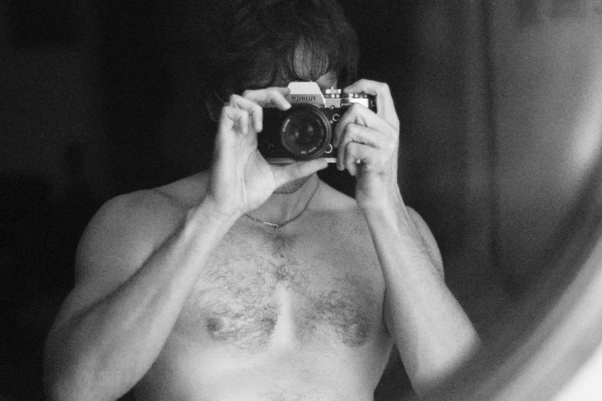

Fotografía · Libros

Bio
Mateo Pérez
Quero
Mateo Pérez Quero (Fuengirola, 1994). Fotógrafo y divulgador cinematográfico, ha organizado actividades cineclubistas durante años, tanto en la Universidad de Málaga, como en la ciudad, colaborando en el proyecto Sala de Cineastas Málaga celebrado cada año en el Cine Albéniz.
Ha especializado su labor artística en el campo de la fotografía de autor, con la autoedición de varios fotolibros: Bound for the fields, skies and mountains (2021), Lightshores (2022) o Al final de la escalera (2026). Su obra guarda una relación muy estrecha con la narración cinematográfica, jugando con la memoria personal y el entorno propio, en un diálogo de los resquicios de lo vivido con el presente.
Contactar por correo ↗